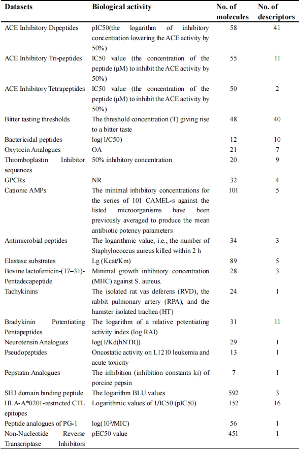
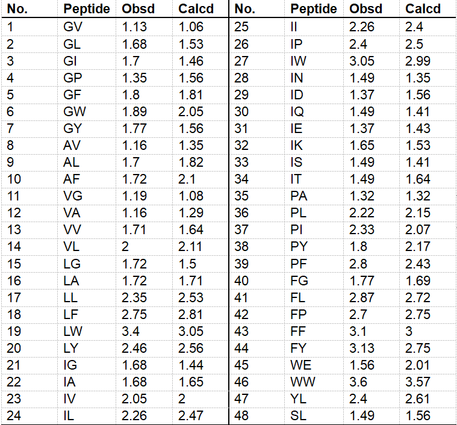

What is bioactive peptide ?
- Peptide is a compound with two or more amino acids linked by peptide bond, which plays an important physiological role in human body and plays a physiological function. Active peptides are called active peptides, also known as bioactive peptides or bioactive peptides.
- A summary of part of the active peptides in the database

- Amino acid descriptors are proposed to characterize peptide sequences, parameterize the structure and properties of peptide sequences, and convert peptide structure into a vector in amino acid descriptors matrix, which can be used to test the effectiveness of amino acid descriptors. Peptide analogues can be a collection of activity values that can be obtained from experiments or related literature, also known as peptide datasets.
- For example, sequences of 48 bitter dipeptides and observed and calculated activities shows in Table
